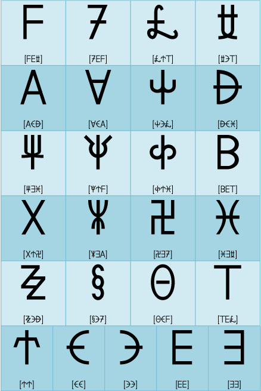
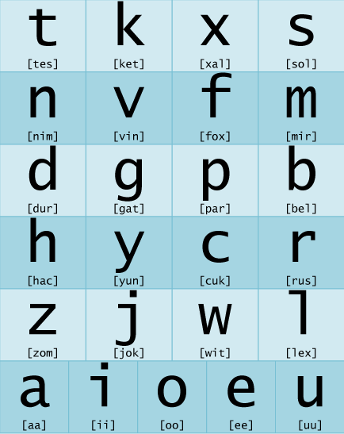

Sitemap
Contents Menu
이전 페이지로
인물소개
인사말
환자
어순
과거, 진행, 완료
부사
계사(be동사)
의문문, 부정문
명령, 의뢰, 금지
대명사
격사(전치사)
관계사
강세와 방언
숫자
접속사, 순사
사생동사, 마치며
‘아르카 첫걸음’에 오신 것을 환영합니다! 안녕하세요, 학생 역할을 맡은 시온입니다. 17살짜리 고등학교 2학년입니다. soonoyun! 선생님 역할을 맡은 레인입니다. 마찬가지로 아르바자드의 여고생이에요. 어른들의 사정에 의해 일시적으로 한국어를 할 수 있게 되었습니다('-'*) 음~ 맨 처음의 ‘소노윤’이란 게 뭐지? 그리고 아르바자드가 어디야? 세계지도에 없는 걸? soonoyun은 ‘안녕하세요’야. 아침이나 저녁에도 soonoyun. 편리하지? 아르바자드는 내가 사는 별 아톨라스에 있는 나라야. 내가 가르치는 아르카는 이 나라에서 쓰이고 있어. 지구 말이 아니구나……. 어쩐지 못 보던 글자인데 하고 생각했었어(;￣ω￣)ゞ  이 글자는 환자(幻字)라고 해. 이건 대문자야. 자음이 20글자이고 모음이 5글자. 합쳐서 25글자지. 이런 걸 어려워서 어떻게 외워. E나 F같은 건 그나마 어떻게든 되겠는데 말야. 실은 대문자는 평소에 쓸 일이 없기 때문에, 다음에 나오는 소문자만 외워도 충분하단다. 아, 이거면 할 수 있을 것 같아. 전부 다 한 획인 데다 알파벳이랑 똑같은 것도 있으니까. 한 획이면서 짧게 만들려면 모양이 한정되니까 아무래도 지구의 문자랑 겹칠 수밖에 없겠네. 환자와 알파벳에 대해서는 이쪽에 번외편을 준비했습니다. 조금 어려운 폰트에 대한 이야기에요. 소문자가 더 쉽다는 건 알겠는데, 그렇다고 해서 금방 외워지지는 않겠는걸. 좋아, 알파벳으로 옮겨 써야지. 익숙해질 때까지는 이게 더 보기 쉽겠다.  어려운 건 x나 c인가. x는 샤 발음이고 c는 이탈리아어 등에서 쓰는 ‘떨림음’의 라 발음이네. 영어와 마찬가지로 l과 r도 있으니까 c도 포함하면 라 발음이 3개나 있는 셈이구나. 힘들겠어(；゜０゜) 나머지는 로마자 발음으로 하면 되는 것 같아. y는 야, j는 쟈, h는 하, w는 와……. 일단은 알파벳으로 전사된 독음을 외워야 하겠지. tx가 챠, ts가 짜(쯔아) 발음이 되는 것도 포인트야. 환자는 아르카를 쓰기 위해 만들어진 문자니까 알파벳으로 쓰는 것보다 훨씬 빠르게 쓸 수 있단다. 천천히 외워 보렴. 좌우 대칭인 글자가 많아서 나도 어릴 때는 자주 tes와 ket를 반대로 써 버렸어. 하다 보면 알파벳의 d와 b처럼 익숙해지지만. 꾸준히 손으로 써 가면서 외우는 게 좋을 것 같네. 어쨌든 처음에는 전사하고 봐야겠어. x는 샤, c는 라. 일단은 이게 다네. 나머지는 로마자 발음♪ *이 두 사람은 소설 ‘시온의 서’에 나오는 히로인입니다. 나중에 등장하는 알리아와 아르셰를 포함해 일러스트는 모두 nias avelantis 씨가 그려 주셨습니다. 대단히 귀여운 일러스트를 그려주셔서 감사합니다.